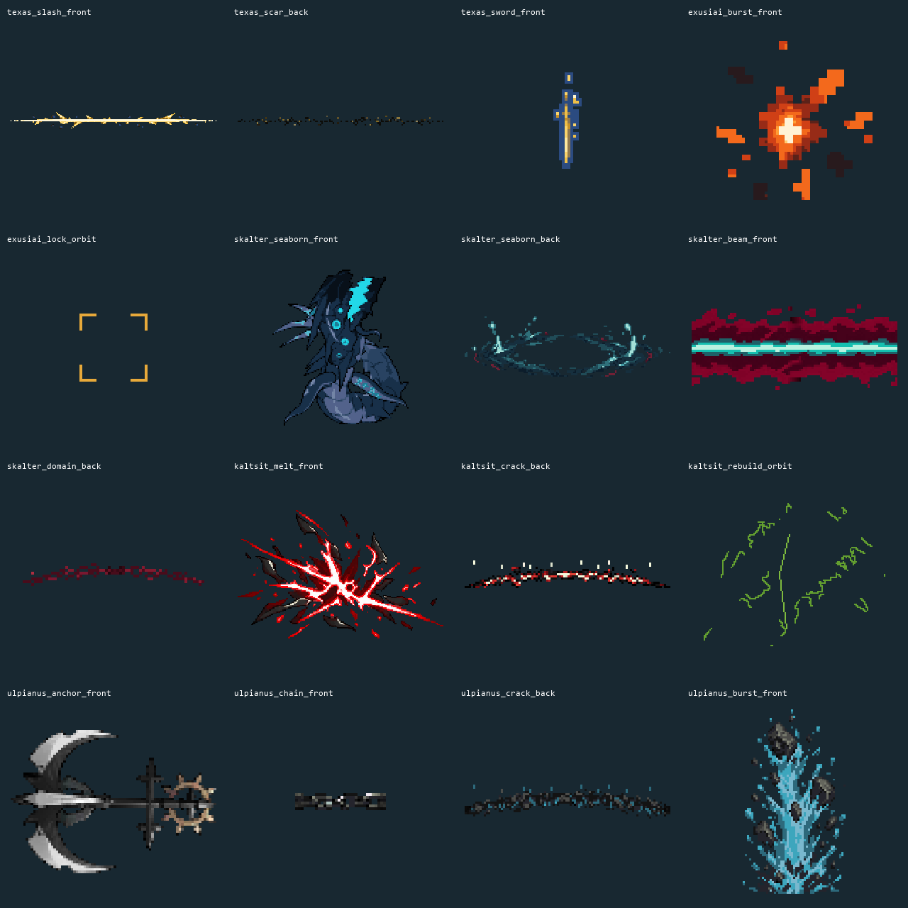

终结技第一批 · 完整动画
5 人、16 项完整 @2x 帧条。每段视频按素材原速、30 fps 输出，依次展示黑底与本作暗色地面。此页是素材播放预览；实机接入由 Claude 在终结技原型中验收。

fx_ult_texas_slash_front
8 帧 · 24 fps · 单帧 @2x [768, 80] · 1.8750 MiB
帧条 · MP4
fx_ult_texas_scar_back
4 帧 · 10 fps · 单帧 @2x [256, 32] · 0.1250 MiB
切口按固定空间纹理逐步侵蚀；暖色碎屑沿外侧飞出、落回并熄灭，整条淡出。
帧条 · MP4
fx_ult_texas_sword_front
6 帧 · 20 fps · 单帧 @2x [64, 224] · 0.3281 MiB
帧条 · MP4
fx_ult_exusiai_burst_front
6 帧 · 30 fps · 单帧 @2x [128, 128] · 0.3750 MiB
帧条 · MP4
fx_ult_exusiai_lock_orbit
8 帧 · 24 fps · 单帧 @2x [96, 96] · 0.2812 MiB
帧条 · MP4
fx_ult_skalter_seaborn_front
10 帧 · 12 fps · 单帧 @2x [320, 320] · 3.9062 MiB
帧条 · MP4
fx_ult_skalter_seaborn_back
6 帧 · 12 fps · 单帧 @2x [320, 96] · 0.7031 MiB
帧条 · MP4
fx_ult_skalter_beam_front
6 帧 · 24 fps · 单帧 @2x [192, 80] · 0.3516 MiB
循环材质沿 +x 推进一个完整周期；青绿直芯、深红粗糙边和 80 显示线宽保持。
帧条 · MP4
fx_ult_skalter_domain_back
6 帧 · 10 fps · 单帧 @2x [128, 64] · 0.1875 MiB
先按已确认参考半径展平，仅沿切线搬运真实纹理像素，再还原弧；循环相位等步回接。
帧条 · MP4
fx_ult_kaltsit_melt_front
8 帧 · 24 fps · 单帧 @2x [384, 384] · 4.5000 MiB
帧条 · MP4
fx_ult_kaltsit_crack_back
6 帧 · 20 fps · 单帧 @2x [192, 64] · 0.2812 MiB
闭合裂缝从弧段中央向两端张开；裂口两岸分离，源材质碎屑抛起再落地，末两帧冷却侵蚀。
帧条 · MP4
fx_ult_kaltsit_rebuild_orbit
12 帧 · 16 fps · 单帧 @2x [256, 256] · 3.0000 MiB
帧条 · MP4
fx_ult_ulpianus_anchor_front
4 帧 · 程序旋转角度帧 fps · 单帧 @2x [192, 192] · 0.5625 MiB
帧条 · MP4
fx_ult_ulpianus_chain_front
2 帧 · 12 fps · 单帧 @2x [64, 32] · 0.0156 MiB
保留已确认的两态链节晃动；轮廓和链节高光均变化，非静图透明度闪烁。
帧条 · MP4
fx_ult_ulpianus_crack_back
6 帧 · 20 fps · 单帧 @2x [192, 64] · 0.2812 MiB
闭合裂缝从弧段中央向两端张开；裂口两岸分离，源材质碎屑抛起再落地，末两帧冷却侵蚀。
帧条 · MP4
fx_ult_ulpianus_burst_front
8 帧 · 20 fps · 单帧 @2x [128, 192] · 0.7500 MiB
帧条 · MP4
Manifest · 交接说明 · 技术核验